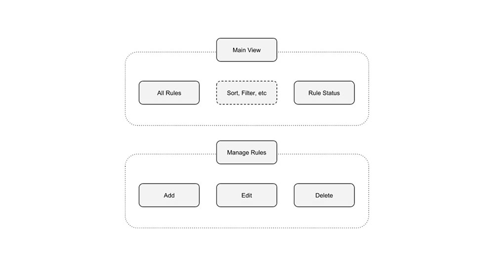
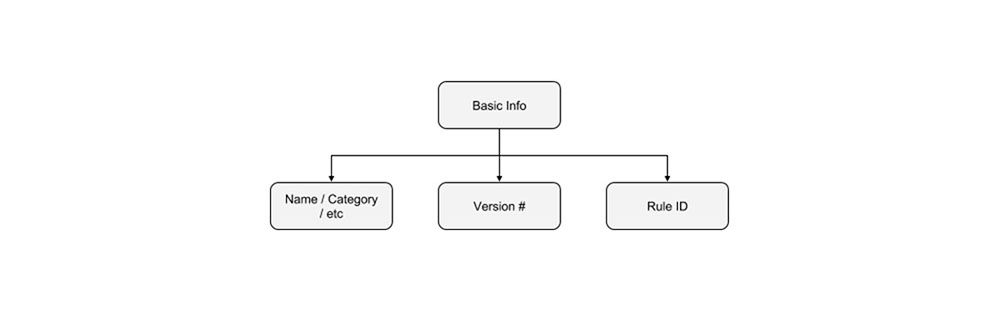
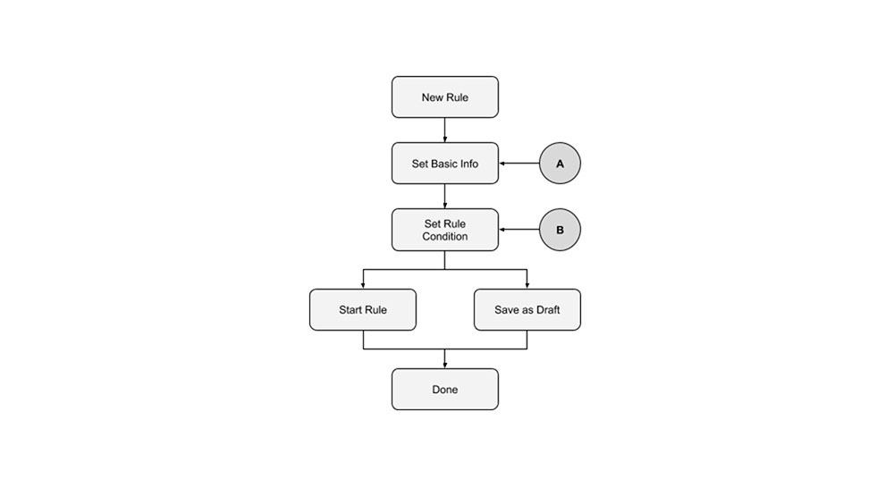
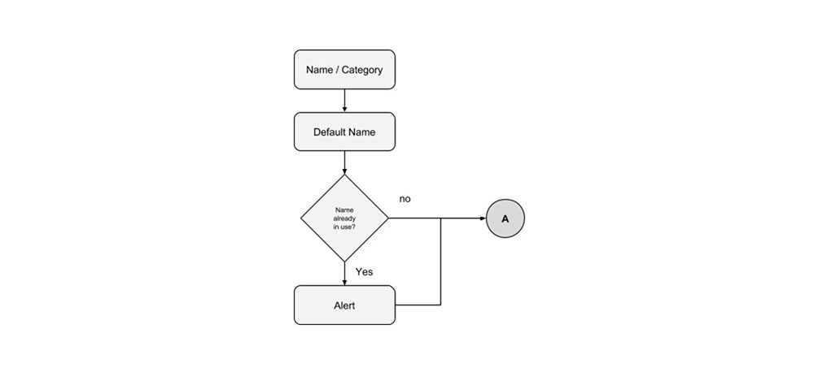
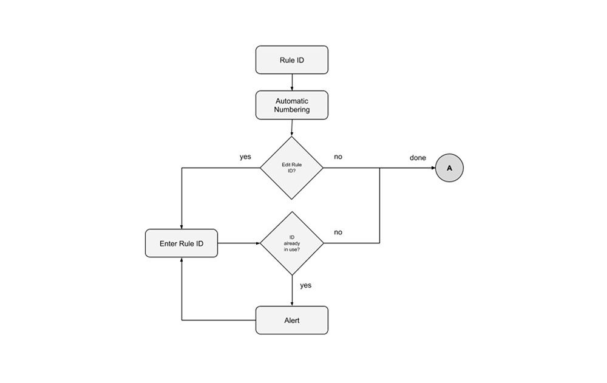
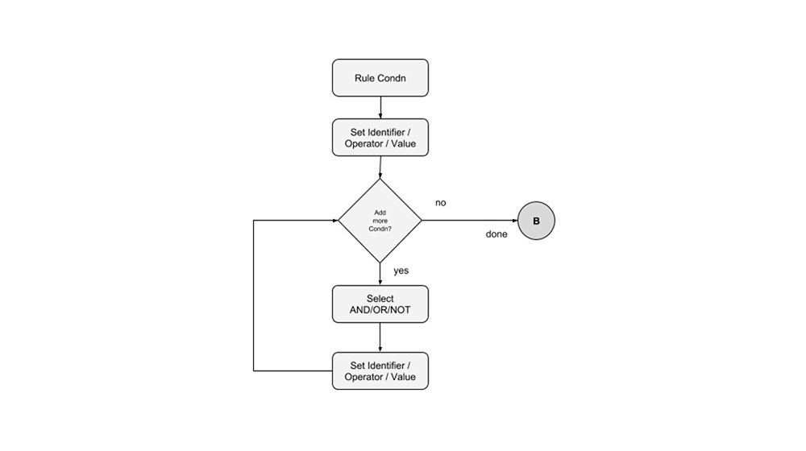
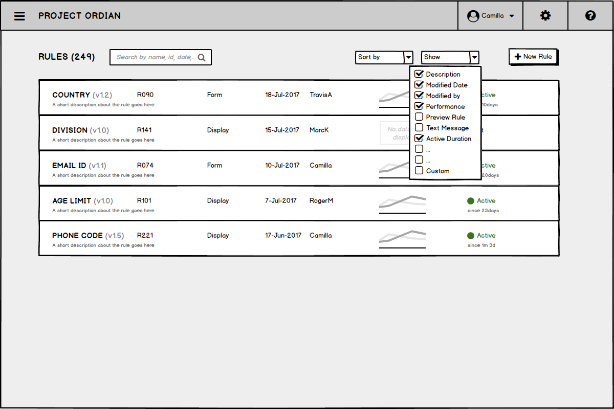
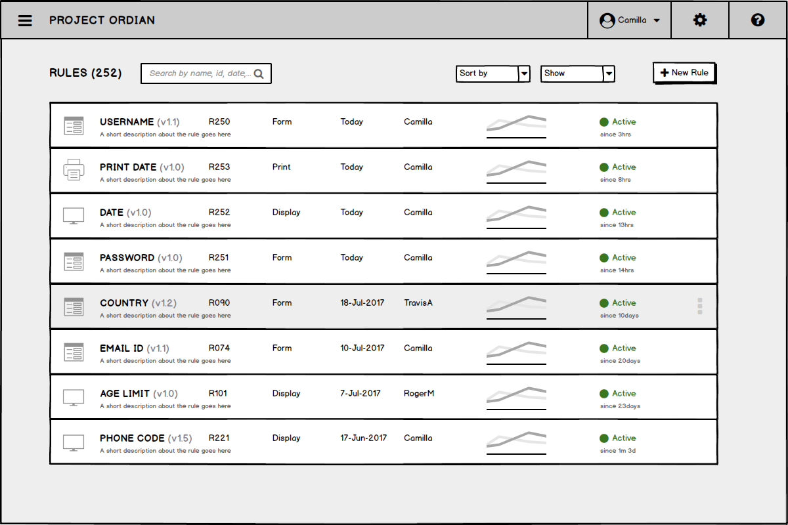

Design Challenge
Design a Rules Engine Framework which will help administrators to define rules for form validations across all forms in an application. This includes, (1) Required format e.g email, phone code, etc (2) Required text length or range (3) Smart defaults, e.g country selection defaults phone country code, etc.
The rules framework should consider different UI patterns including alerts and warnings.
The Goal
The framework designs should include, wireframes, taskflows, comparison of rules, alerts, etc with the focus on interaction. The team expects multiple design options with different UI patterns and clear design rationale. Also any additional and relevant artifacts would be a plus.
Research
The forms are one of the core integral part of an application - during the process of using the application, the forms helps to collect the valuable data from the users at appropriate intervals for the purpose. It is important to validate the forms for any errorous data from the users which may cause an impact on overall experience with the application.
As we know, human are known to make mistakes, hence wherever possible, the power of technology could be utilised to minimize/prevent the user's making errors by helping with defaults, hints on inputs to certain fields, etc. This intelligence will enhance the user's experience with the application and keep engaged using the application without feeling lost!
In the past, I never got opportunity to design rules for the forms in the applications. It was mostly been taken care by the engineers to add scripts in the respective forms to validate the user data and alert the user's for the respective mistakes and so on. Hence, for this design task, I used secondary research (mostly using internet) to know more about how the rules are being constructed using the script, different types, etc. Some of the clips that I referenced as follows:
This analysis was helpful to understand about different rules being used. And I have made some purposeful assumptions throughout in my designs in the exercise, which are purely based on my understanding.
Concept Designs and Task Flow
I like to explore many ideas and I prefer the whiteboard or pen/pencil and paper medium—as it is easy, convenient and quick to shape the concepts and evaluate for possible solutions for the problem. Also as part of different ideas exploration, I tried to evaluate different design patterns which could possibly work as a framework application for the adminstrators.
Task Flows
I would like to talk about the various task flow that I found can be part of the framework functionality. But for now, the basic building blocks and tasks flow diagrams for the framework's core functionality as follows:
High level blocks:
New Rule Blocks:
Basic Info Data Blocks:
New Rule Task Flow:
Naming Flow:
Version Flow:
Rule ID Flow:
Rule Condition Flow:
Wireframes
I developed the wireframes using Balsamiq tool, it is of the convenient tools to develop wireframes that I have been using and is always very handy to explore concepts along with the click through interactions.
Project Ordian - The name that I have given for this project and used through out in all my designs. Also, I have made few assumptions along the process while keeping the core functionality, but have gone broad with three different Interaction design flow for the framework application. I will walk you through each of the design approach, but meanwhile, the wireframe for each design approach as follows:
Design Approach A: I have used some of the basic UI patterns which includes ready to use UI controls like, tables, buttons, simple forms, etc.
A.1: Main View
A.2: Customize Grid View
A.3: New Rule (simple) - Popup
A.4: New Rule (advance) - Popup
A.5: Task Complete Notification
A.6: Confirmation Dialog
Design Approach AInvision Interactive Prototype Link (1/3) https://goo.gl/36w4PM
*Please browse the prototype in full screen mode for better experience!Design Approach B: I have used some of the simple UI patterns but little customization in some of the UI controls for a better experience.
B.1: Main View (customized Grid)
B.2: New Rule (simple) - Onscreen
B.3: New Rule (advance) - Onscreen
B.4: Main View - Action Menu
B.5: Task Complete Notification
B.6: Confirmation Dialog
Design Approach BInvision Interactive Prototype Link (2/3) https://goo.gl/9UwUsp
*Please browse the prototype in full screen mode for better experience!Design Approach C: Modern Design approach using customized cards as list, flexible grid layout to accommodate new content, etc.
C.1: Main View
C.2: Custom Sort By Options
C.3: Customize Card Information
C.4: New Rule
C.5: New Rule - Operator
C.6: New Rule - Value
C.7: New Rule (advance)

C.8: New Rule (advance)
C.9: Main View - New Rule
C.10: Main View - Action Option 1
C.11: Main View - Action Option 2

C.12: Task Complete Notification
C.13: Confirmation Dialog
C.14: Main View - Rule Icons

Design Approach CInvision Interactive Prototype Link (3/3) https://goo.gl/gyVLvJ
*Please browse the prototype in full screen mode for better experience!Consumer Front Form Validation: Sign In and Sign Up form validation alerts/warnings.
U.1: Sign In Form

U.2: Sign In Form (alert)
U.3: Sign Up Form (defaults)
U.4: Sign Up Form (alerts)
Let's discuss about all the above design approaches and the benefits of design patterns, etc.
Here, I conclude this first design exercise.Thank you so much for browsing my designs this far!
Visit Design Exercise 2
Mahendra Kumar